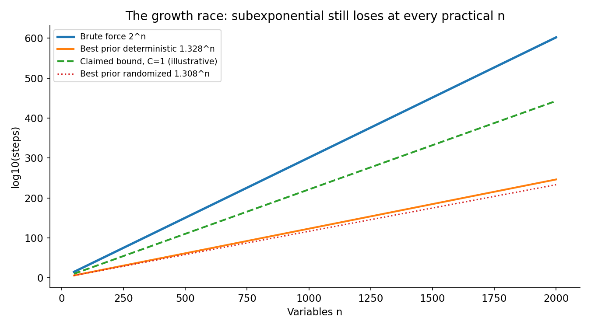
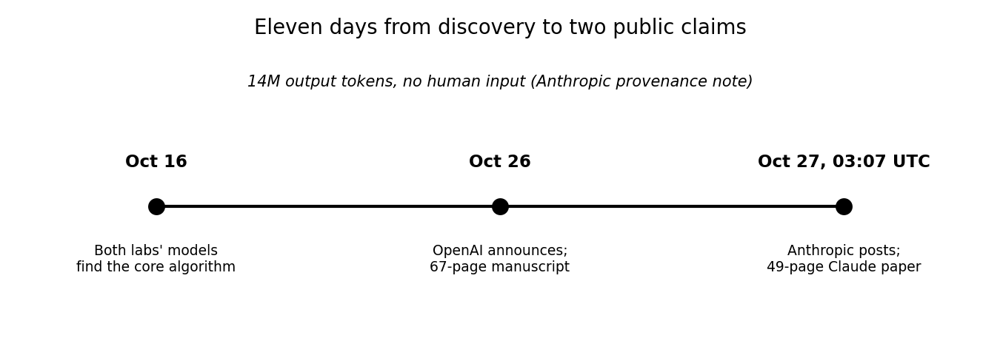
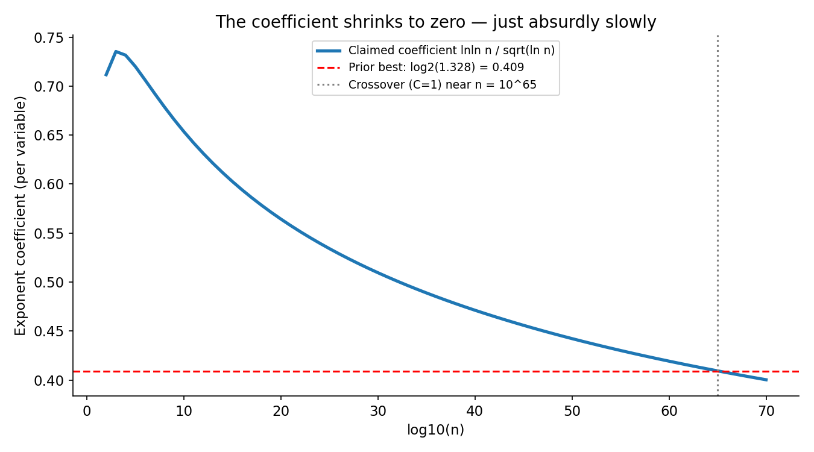
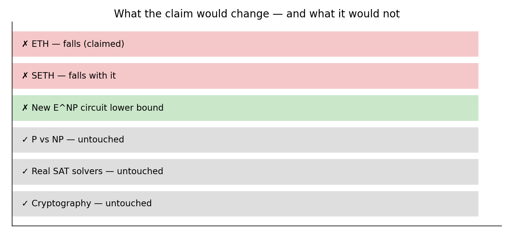

On October 16, 2026, two AI models — one at OpenAI, one at Anthropic — independently found the same impossible result. Ten days later, both labs published it. The claim: a deterministic algorithm that counts the solutions to 3-SAT in subexponential time, refuting the Exponential Time Hypothesis (ETH), a conjecture that has anchored fine-grained complexity theory for a quarter century. One paper is credited to an author named "Claude." The other was formalized in the Lean proof checker the day after it was found. And, by Anthropic's own appendix, no person is known to have checked the full proof.
This post explains what was claimed, how the two algorithms work, why the result changes theory but nothing practical — and why the most interesting part is not the theorem, but the provenance line.
The ELI5 version
Imagine a puzzle: 100 light switches, and a list of rules like "switch 3 ON, or switch 7 OFF, or switch 12 ON." Find a setting that satisfies every rule. Checking a proposed setting is trivial — one pass through the rules. Finding one is the hard part: the dumb method tries all 2^100 settings, about 1.3 × 10^30 of them. That is more than the number of seconds since the Big Bang, squared.
3-SAT is that puzzle, formalized: n Boolean variables, clauses of at most three literals each, satisfy them all. Since the 1980s, clever algorithms have shrunk the base of the exponent — from 2^n down to about 1.328^n for deterministic algorithms and 1.308^n for randomized ones — but never below exponential. The Exponential Time Hypothesis, proposed by Russell Impagliazzo and Ramamohan Paturi, bet that this was fundamental: for some fixed δ > 0, 3-SAT needs 2^(δn) time. No algorithm could push the exponent's coefficient to zero.
The October claims say the coefficient does go to zero. The new bound is 2^O(n log log n / √log n): the per-variable exponent is log log n / √log n, which shrinks as n grows. Eventually — at absurdly large n — it beats 2^(δn) for every fixed δ. That is exactly what ETH ruled out.
And the algorithm does something harder than deciding satisfiability: it counts the satisfying assignments (#3-SAT). Counting is at least as hard as deciding, so a counting algorithm that breaks the barrier breaks it with margin.
How it works: two routes to the same bound
The two labs describe different machinery, converging on the same asymptotic bound. Neither is a faster brute force; both are algebra.
The OpenAI route: a dial, easy points, and interpolation. Write the number of satisfying assignments as a polynomial in a dial variable T. At T = 0 sits the formula you actually care about. Deform the formula (T ≠ 0) so that, once a handful of shared measurements are fixed, it falls apart into small independent groups that are easy to count. Collect Taylor coefficients at those easy points, then recover the exact count at T = 0 by Hermite interpolation — the same trick as reconstructing a curve from its values and slopes. The hard part is keeping the polynomial's degree low: a matrix built from commuting swaps, plus an interpolated alternating sign, does that job. Sparsification, clause copying, parity tests from Tanner codes, and Beigel–Tarui polynomials handle the general case.
The Anthropic route: tensor networks and rank. Route the counting problem through sums of products represented as tensor networks, and bound their rank. The key move is decomposing a crossing into a signed sum of pieces, so different terms can use different contraction orders — escaping a more restricted single-contraction-tree model that would cap the savings. Rank bounds on those pieces are what push the exponent's coefficient toward zero.
Then the machine checks itself. Both proofs were formalized in Lean 4, the proof assistant that verifies each logical step mechanically rather than trusting human review. Anthropic's development spans 1,050 Lean modules built on Mathlib, uses only Lean's three standard axioms, and is rechecked by a second, independently written kernel (nanoda). OpenAI's Lean formalization was completed October 17, the day after discovery — though commentators note it covers a slightly weaker bound than the manuscript's headline claim.

The state of the art: what the numbers actually say
The timeline is the story in miniature:

- October 16: an internal OpenAI model finds its proof; an internal Claude research model finds the core algorithm with 14 million output tokens and no human input, per Anthropic's provenance note. Same day, same conclusion, neither lab knowing about the other.
- October 26: OpenAI announces three AI-produced results — the ETH refutation, a harmonic-analysis result, and a quantum-field-theory existence proof — with a 67-page manuscript, "The Exponential Time Hypothesis Is False," dated October 17 and revised October 25.
- October 27, 03:07 UTC: Anthropic posts its 49-page paper, "A 2^o(n) Time Algorithm for 3-SAT," credited simply to "Claude, Anthropic," with the Lean 4 formalization on GitHub.
The exponent tells the practical story. The claimed coefficient, log log n / √log n, decays — but at a glacial pace:

At n = 10^6 variables the effective base is still 1.63, worse than the old 1.328. My own illustrative arithmetic (the papers hide their constants inside the big-O) puts the crossover against 1.328^n at roughly n = 10^65 with constant 1 — and at n = 10^9278 with constant 6, far beyond the ~10^80 atoms in the observable universe. One explainer puts the brute-force crossover above 10^108 variables; the paper itself says the approach seems unlikely to help on any formula with fewer than about 10 million variables, while brute force is already impractical at 100. This is a "galactic algorithm": a theorem about asymptotics, not a tool anyone will ever run.
The theoretical fallout, if the proofs hold, is large. SETH — the Strong Exponential Time Hypothesis — implies ETH, so it falls too. Earlier work then yields subexponential algorithms in theory for Independent Set, Clique, Vertex Cover, and Dominating Set, plus a new circuit lower bound for the class E^NP. Anthropic's literature search found 800+ papers with results relying on ETH or an assumption implying it; those results now rest on a broken foundation and need re-examination. The review is led by the conjecture's own authors — Impagliazzo, Paturi, and MIT's Ryan Williams — who stress their involvement is not certification.

The honest caveat — where this could break
Four things to keep in view. First, neither proof is peer-reviewed or independently certified. Lean verifies that the stated propositions follow from the axioms; it does not verify that the formal statement says what the paper says. Anthropic is explicit: "Lean checks the proofs, but no machine checks that this file says what the paper says," and its appendix notes the development "was written by AI models and reviewed by other instances of the same models" with no person known to have checked it. Second, the headline bound and the checked bound may differ. OpenAI's Lean proof reportedly covers a slightly weaker bound than its manuscript; the sharper claim rests on the manuscript's own argument. Third, nothing practical changes. This is not P = NP — a subexponential algorithm is still vastly slower than polynomial — not a faster SAT solver, and not a cryptography break; reductions to 3-SAT inflate the input size, wiping out the gain for general NP problems. Fourth, the coincidence deserves scrutiny, not awe. Two labs finding the same result on the same day is either a remarkable convergence or a sign of shared training-data lineage; the papers themselves note the independence claim, but independence of two frontier models trained on overlapping corpora is a claim, not a fact.
Takeaways
- ETH said 3-SAT needs 2^(δn) for some fixed δ > 0. The October claims give a deterministic counting algorithm in 2^O(n log log n / √log n) — the coefficient tends to zero, which is exactly what ETH forbade.
- Two labs, one day, one answer. OpenAI (67 pages, announced Oct 26) and Anthropic's Claude (49 pages, posted Oct 27) both trace their core algorithm to October 16; Anthropic's provenance note specifies 14 million output tokens with no human input.
- The mechanism is algebra, not search. A deform-and-interpolate polynomial argument on one side, tensor-network rank bounds on the other — both counting assignments, not just deciding satisfiability.
- The proof is machine-checked and human-unread. Lean 4 formalizations (1,050 modules on Anthropic's side, second-kernel recheck) verify the logic — but no machine checks the statement matches the paper, and no person is known to have checked Anthropic's full development.
- The practical impact is zero and the theoretical impact is huge. Crossover against the old 1.328^n sits near 10^65 variables even with constant 1 (10^9278 with constant 6, by my illustrative arithmetic); meanwhile SETH falls, 800+ ETH-dependent papers need revisiting, and a new E^NP lower bound appears.
- Check it yourself. The companion notebook recomputes the growth race, the decaying exponent coefficient, both illustrative crossovers, and a brute-force #3-SAT count on a toy formula — the problem the papers claim to solve subexponentially.